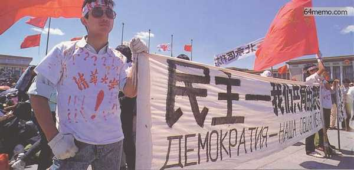
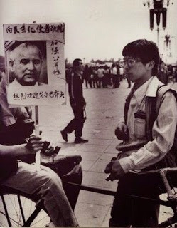
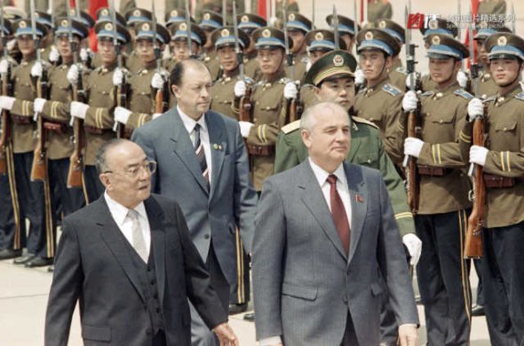
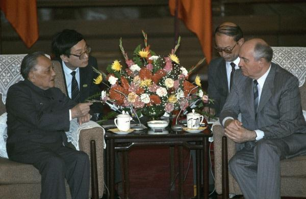
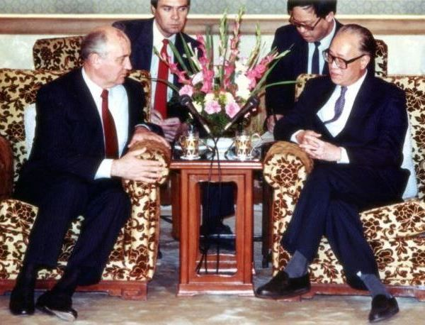

最近几年，这个系列已经成为“年更系列”（每年6月更新一篇）。考虑到2019年是“六四的30周年”，（如果有空的话）俺争取在今年多发几篇。
首先，简单说一下中苏关系的变迁和当时的背景。
1945年二战结束后，美苏就分别形成了两大阵营。毛腊肉在1949年夺权后，毫无悬念地投入苏联阵营（共产党阵营）。在中共掌权的前几年，中苏关系好得如胶似漆。
1953年，斯大林去见马克思；不久之后，赫鲁晓夫成为苏共掌门人。中苏关系就开始降温。至于为啥中苏关系变差，这里面的原因有好几个。既有双方意识形态方面的差异（包括“赫鲁晓夫全面否定斯大林”）；也有毛腊肉的【个人因素】。当年斯大林在世，资历/威望各方面都胜过毛，毛也承认斯大林是共产党阵营的老大。但赫鲁晓夫就不同啦。毛腊肉打心底里是看不上赫鲁晓夫滴。毛觉得：斯大林之后，就应该轮到自己当共产党阵营的老大。
中苏双方关系变差之后，先是搞【口水战】（中苏论战）；后来觉得口水战还不过瘾，进一步发展到【兵戎相见】（最有名的就是“珍宝岛之战”）。
珍宝岛冲突之后，苏共高层（尤其是军方）准备一劳永逸地解决中国问题，制定了针对中国的【核打击计划】。准备用【百万吨级当量】的核弹，全面摧毁中国的政治和军事目标。（注：在1969年，天朝的核反击能力还很弱）
关键时刻，多亏了美国佬出手阻拦，中国才逃过一劫。关于这事儿，连咱们朝廷的官方喉舌“人民网”都有报道（链接在“这里”）
请注意：当年苏共对中国的【核打击计划】可不是吓唬人滴，差点就动手了。具体细节，请看上述“人民网”的链接。（注：俺刻意引用朝廷喉舌的链接，就是为了堵住五毛的嘴）
到了70年代后期，社会主义的弊端（尤其是中央计划经济的弊端）逐渐显现，苏联开始走下坡路。
1980年，美国换了一个超级强硬的里根总统，把“对苏遏制战略”发挥到极致。苏联遭到全面围堵和绞杀，被搞得喘不过气来。（注：关于这段历史，详见俺之前的博文《苏联是如何被慢慢勒死的？——聊聊冷战中美国的遏制战略》）
正是在这种情况下，苏联才开始考虑与天朝和好。于是中苏关系在80年代逐步解冻，一直发展到1989年的“戈尔巴乔夫访华”（为了打字省力，以下称之为“中苏峰会”）。
当时参与学运的大部分高校学生，对戈尔巴乔夫的印象还是挺好滴——因为戈氏在苏联进行了【政治改革】。而政治改革恰恰是学运的重要诉求。
下面这几张照片，是当时广场上欢迎戈尔巴乔夫的标语。大致可以看出广场上的学生对戈氏的态度。

（标语上用【中俄两种文字】写着

（标语分别写着
如果从“动机”而言，示威的学生并【不想】破坏中苏峰会。他们在中苏峰会来临之际，依然占据天安门广场，只是以此为筹码，向朝廷方面施压，希望能改变“动乱”的定性（参见本系列第17篇——“四·二六社论”出笼的经过）
但由于高校学生占据了天安门广场，实质上对“中苏峰会”造成了相当程度的【负面】影响。
按照朝廷通常的惯例，其它国家“元首级”人物到北京进行国事访问，要在【天安门广场】举行欢迎仪式，并检阅仪仗队。但戈尔巴乔夫到达北京的时候（5月15日），广场早就被示威的学生占据很长时间了。（在本系列的前一篇，俺也介绍了——改革派找学生斡旋，希望学生撤出广场，但最终没有结果）。
在这种情况下，戈尔巴乔夫的欢迎仪式最终改在首都机场进行。不得不说，对朝廷而言，这是【非常没面子】的事情。

（首都机场，杨尚昆陪同戈尔巴乔夫检阅仪仗队）
戈尔巴乔夫访华，欢迎仪式为啥是杨尚昆陪同？
因为当时的【国家主席】是杨尚昆。由于“戈尔巴乔夫访华”属于“元首级”的访问，所以天朝方面也要派出“元首级”的人物举行欢迎仪式。而“元首级的人物”对应的职务就是【国家主席】。
俺在本系列开头第1篇——八十年代的朝廷，已经介绍过了——咱们天朝的“国家主席”这个职务，是个【虚职】，相当于“花瓶”。
当年尼克松访华，为啥也是在首都机场举行欢迎仪式？
写这个章节的时候，俺已经猜到某些读者会反驳说：当年欢迎尼克松访华，也是在首都机场进行。
关于这点。俺来解释一下——
在1980年【之前】，“国宾欢迎仪式”通常是在“机场（或车站）”进行。所以尼克松访华，在首都机场欢迎，是很正常滴。
到了1980年的时候，朝廷进行了【礼宾改革】。把“国宾欢迎仪式”的地点改到天安门广场（人民大会堂东门外）。整个八十年代的大部分时间，都是在那里搞欢迎仪式。
所以89年的中苏峰会，在首都机场举行欢迎仪式，就显得【极其反常】（也就是俺前面所说的——非常没面子）
在本系列的第2篇，俺曾经提到邓的性格特点。如果要总结的话，大致有如下几项：
关于“爱面子”这条，俺顺便吐槽一下——
邓矬子一方面非常恋权，另一方面又非常忌讳别人说他恋权。这就是俗话所说的【既要当婊子，又要立牌坊】。
在文革【初期】，毛腊肉重点打击的对象是“刘邓路线”。当时毛腊肉亲自写了一篇大字报叫《炮打司令部——我的一张大字报》。请注意，此文的“司令部”指的是“以刘邓为首的资产阶级司令部”。而矮邓就是这个司令部的第二号人物。
可想而知，矮邓在文革初期没少受罪，而且主要是红卫兵折腾他。这段悲惨经历，多半在他内心留下永久的【负面】记忆。
早在4月下旬，当李鹏等人去找邓请示的时候，邓就把“学运”上升到【动乱】的高度。为啥捏？这很大程度与他的文革经历有关。大规模的学生运动，很容易让邓联想到文革的红卫兵。
等到5月15日，“中苏峰会”受到学潮的影响，连“国宾欢迎仪式”都被迫改地方。这就使得邓矬子对学运的【敌视】上升到新的高度——因为学潮对中苏峰会的影响，让邓觉得【很没面子】。而且也更加让他认定：学潮就是“动乱”。
由于高级别的外事活动，需要提前做准备工作；朝廷方面大约在13日或14日，就已经决定把“国宾欢迎仪式”改到首都机场。而这么重要的变更，肯定要请示矮邓。所以俺可以合理地猜测——大约在13日或14日，邓就已经下定决心，要对学潮【来硬的】。
所谓“来硬的”，就是指——用强硬的手段（包括流血的方式）来摆平。
在本系列前面的博文，俺已经介绍过“邓赵二人的关系”，胡耀邦和赵紫阳，堪称邓小平的左膀右臂。胡耀邦因为“八六学潮”而下台之后，赵紫阳更加成为邓小平最重要的政治助手和政治盟友。
89学潮开始之后，赵紫阳一直主张【怀柔策略】，以温和的方式慢慢平息学潮。对赵的温和立场，（俺猜测）邓的内心有可能是不满意滴。但这种【不满】应该还是相对【轻度】滴。假如赵的怀柔策略能够奏效，那么邓的这种不满，也就会自然消散。
可悲的是，赵的策略【没有】奏效。学生方面，反而因为“绝食抗议”，掀起新的高潮。（关于绝食，后续博文还会提及）如此一来，就会使得——邓对赵的不满，逐渐积聚。
虽然邓对赵处理学潮的方式有一定程度的不满，但截至到5月15日，邓赵二人的关系还没有破裂——邓还是把赵当成“自己人”。
真正导致【邓赵决裂】的，是赵紫阳在16日晚间，对戈尔巴乔夫所说的那番话。
在戈氏的访华过程中，有三次高层会谈，分别是：
（注：说李鹏是傻逼可没冤枉他。在80年代，为了嘲笑其治国无能，人们给他起了个绰号叫“李科长”）

在邓对戈氏所说的话中，关键的是结尾的那段：
如何解读邓的这段话捏？
在80年代，每当矮邓在公开场合强调【四项基本原则】，通常说明——邓觉得当前的路线偏“右”，需要反击“资产阶级自由化”。
邓与戈氏在5月15日会面时，学潮的规模已经很大。这时候邓公开强调【四项基本原则】，相当于宣布——
1. 他会继续坚持“动乱”的定性
2. 对学潮处理不力，就是立场不坚定，就是“资产阶级自由化”

在赵与戈氏的会谈中，最关键的是下面这段：
这番话直接导致了后续的一连串事件，下面俺分别介绍。
据说邓得知赵的讲话内容后，极度震怒（这是从邓小平女儿那里传出来滴）。
另一个迹象是：赵紫阳在发表上述讲话的次日（17日），想要找邓单独面谈一下（当面解释一下）。但是邓拒绝与赵单独面谈，而是在邓家召开了紧急常委会（在本系列的后续博文，俺还会具体介绍17日那天在邓家召开的常委会）。
从这些迹象可以看出，赵紫阳的上述讲话，直接导致了【邓赵决裂】。
赵紫阳的这番话为啥让邓矬子如此激动捏？
其一，
因为当时的国内局势已经非常紧张且复杂。抗议示威已经不再局限于高校学生，而是蔓延到社会各界。在如此关键的时刻，赵紫阳强调“邓才是真正的一把手”，等于让矛盾的焦点都集中到邓身上。
其二，
俺前面也说了，邓矬子这人就是【既要当婊子，又要立牌坊】。他一方面非常恋权，另一方面又非常忌讳别人说他恋权。赵紫阳的这番话，会让很多人觉得——邓表面上退居二线，实际上还紧抓权力不放。于是，邓矬子“恋权”的形象就露馅啦。
“邓赵决裂”也意味着，赵紫阳政治生命已经完蛋了。
在本系列后续的博文中，俺还会详细介绍赵紫阳下台的过程。
一旦赵紫阳的仕途终结，对朝廷中的改革派必定是一大打击。而且保守派肯定会觊觎“总书记的宝座”。实际上，李鹏的如意算盘就是——挤掉赵紫阳，自己取而代之（只不过，后来半路杀出个江蛤蟆，让李科长的美梦落空）。
从历史的后续发展可以看出——赵紫阳倒台后，其它改革派的高官在六四之后，也都靠边站了。
一般来说，能混到朝廷高层的，最起码都懂一点官场之道。
通过16日的中苏峰会（尤其是邓赵二人的讲话），很多朝中大员已经看出苗头，开始见风转舵。某些原先支持“温和策略”的人，就识趣地转向“强硬策略”。
典型的例子当属杨尚昆。他本来是站在赵紫阳这边，主张“怀柔政策”，反对“军事戒严”。但是到了17日（中苏峰会次日），在矮邓家中开紧急常委会的时候，杨尚昆反而率先提出要进行“军事戒严”（注：在《改革历程——赵紫阳回忆录》一书中，赵紫阳记述了杨尚昆在那天会议上的发言）
而且，从后续的事态发展来看，杨尚昆也确实充当了血腥镇压的急先锋。
在那本《改革历程——赵紫阳回忆录》中，有一个章节专门谈了“中苏峰会”。其中包含了赵为自己的辩解，原文如下：
但是俺【不】赞同赵本人的辩解。下面是俺的分析：
与“五四讲话”的对比
在本系列的第23篇，提到赵在“5月4日”的两篇演讲。其中一篇是“纪念五四运动70周年的讲话”；另一篇是“会见亚洲银行理事会的讲话”。
这两篇讲话，前者是大范围的，后者是小范围的；前者要先经过“中央书记处”的审核才能定稿，而后者无需审核。所以，赵紫阳就在前一篇演讲中说得很含蓄，滴水不漏；而在后一篇演讲中说得很直白，表明了他对学潮的温和立场。
从5月4日的这两篇讲稿，可以看出赵是一个很谨慎细致的人。
而中苏峰会，他与戈尔巴乔夫的谈话，无论从哪个方面来说，重要性都远远超过5月4日的那两篇讲话。
如果说，5月4日的两篇讲话，他都作了周密的准备，仔细地推敲了措辞；很难想象在中苏峰会如此重要的场合，赵竟然会犯如此低级的错误。
与“其他朝中大员”的对比
在本文前面的章节，俺解读了矮邓会见戈氏，所说的那番话。也提到了：很多朝廷大员，从矮邓的讲话中，听出了邓的潜台词。
而赵紫阳作为邓小平的左膀右臂，跟随其多年。赵对邓的性格，应该是更加熟悉才对。如果说，别的朝廷大员都听出了邓的潜台词；赵紫阳怎么会听不出？
（请注意：邓的会面在上午，而赵的会面在晚间——也就是说，当他与戈尔巴乔夫会面时，他肯定已经知道了邓的讲话内容）
其它一些细节
《八九民运史》一书中还提到一个细节：当赵即将走入会场与戈尔巴乔夫见面时，他先问了现场某个工作人员“是直播吗？”现场的工作人员给了他肯定的回答。
为啥赵紫阳在会晤之前要问这个问题捏？恰恰说明他想在这次会晤中说一些比较【出格】的话（以当时的技术条件，现场直播是无法进行实时审查滴）
基于上述对比，俺认为：以赵紫阳如此老练的政治手腕和如此谨慎细致的性格，他【不至于】犯下如此低级的错误。更大的可能性是——有意为之。
当然啦，由于赵紫阳已经不在人世，咱们已经无从知晓他内心的真实想法。
假设俺上述的分析是正确滴，肯定有读者会问——为啥他要这么干捏？
关于这个问题，俺在本系列之前的某几篇博文，已经作了一些铺垫。如今来汇总一下
在本系列的第23篇，俺提到说——
胡耀邦死后极尽哀荣，而赵紫阳在学运【初期】的名声并不太好，甚至成为学生的嘲讽对象（当时流传：他大儿子赵大军参与“官倒”）。
“胡赵”二人，同为邓矬子的左膀右臂，同样都是改革派的领军人物。（在学潮【初期】）两人的名声，差异却如此之大。这肯定会让赵觉得心理不平衡。
或者换一种说法就是——这样明显的反差，会让他有强烈的动机去消除民众对他的误解。
在本系列的第6篇，俺介绍了“八六学潮”的经过。
那次学潮（相比六四而言）影响的范围不算大，持续时间也不算长。但学潮结束之后，胡耀邦因此而下台。
而“六四学潮”发展到5月中旬，范围已经波及全国，连中苏峰会都受到影响。不管“六四学潮”最终如何平息，肯定得有人出来背黑锅，当【替罪羊】。那么，谁会是替罪羊捏？当然【不可能】是矮邓。虽然矮邓是【实际上】的一把手，但【名义上】已经退居二线。所以，替罪羊多半是总书记赵紫阳。
以赵的政治头脑，他肯定能想到上述这些。
一方面，他希望获得像胡耀邦这样的名声；另一方面，不管他如何做，他的仕途已经没戏了。
在这种情况下，与邓决裂，或许他还能保住自己的名声。从【博弈】的角度来讲，这大概是他最好的选择。
回到本系列的目录
★“中苏峰会”的背景
首先，简单说一下中苏关系的变迁和当时的背景。
1945年二战结束后，美苏就分别形成了两大阵营。毛腊肉在1949年夺权后，毫无悬念地投入苏联阵营（共产党阵营）。在中共掌权的前几年，中苏关系好得如胶似漆。
1953年，斯大林去见马克思；不久之后，赫鲁晓夫成为苏共掌门人。中苏关系就开始降温。至于为啥中苏关系变差，这里面的原因有好几个。既有双方意识形态方面的差异（包括“赫鲁晓夫全面否定斯大林”）；也有毛腊肉的【个人因素】。当年斯大林在世，资历/威望各方面都胜过毛，毛也承认斯大林是共产党阵营的老大。但赫鲁晓夫就不同啦。毛腊肉打心底里是看不上赫鲁晓夫滴。毛觉得：斯大林之后，就应该轮到自己当共产党阵营的老大。
中苏双方关系变差之后，先是搞【口水战】（中苏论战）；后来觉得口水战还不过瘾，进一步发展到【兵戎相见】（最有名的就是“珍宝岛之战”）。
珍宝岛冲突之后，苏共高层（尤其是军方）准备一劳永逸地解决中国问题，制定了针对中国的【核打击计划】。准备用【百万吨级当量】的核弹，全面摧毁中国的政治和军事目标。（注：在1969年，天朝的核反击能力还很弱）
关键时刻，多亏了美国佬出手阻拦，中国才逃过一劫。关于这事儿，连咱们朝廷的官方喉舌“人民网”都有报道（链接在“这里”）
请注意：当年苏共对中国的【核打击计划】可不是吓唬人滴，差点就动手了。具体细节，请看上述“人民网”的链接。（注：俺刻意引用朝廷喉舌的链接，就是为了堵住五毛的嘴）
到了70年代后期，社会主义的弊端（尤其是中央计划经济的弊端）逐渐显现，苏联开始走下坡路。
1980年，美国换了一个超级强硬的里根总统，把“对苏遏制战略”发挥到极致。苏联遭到全面围堵和绞杀，被搞得喘不过气来。（注：关于这段历史，详见俺之前的博文《苏联是如何被慢慢勒死的？——聊聊冷战中美国的遏制战略》）
正是在这种情况下，苏联才开始考虑与天朝和好。于是中苏关系在80年代逐步解冻，一直发展到1989年的“戈尔巴乔夫访华”（为了打字省力，以下称之为“中苏峰会”）。
★学运对“中苏峰会”的【负面】影响
◇学生对戈氏的态度
当时参与学运的大部分高校学生，对戈尔巴乔夫的印象还是挺好滴——因为戈氏在苏联进行了【政治改革】。而政治改革恰恰是学运的重要诉求。
下面这几张照片，是当时广场上欢迎戈尔巴乔夫的标语。大致可以看出广场上的学生对戈氏的态度。
（标语上用【中俄两种文字】写着
民主——我们共同的理想）
（标语分别写着
向民主化使者敬礼、
热烈欢迎戈尔巴乔夫）
如果从“动机”而言，示威的学生并【不想】破坏中苏峰会。他们在中苏峰会来临之际，依然占据天安门广场，只是以此为筹码，向朝廷方面施压，希望能改变“动乱”的定性（参见本系列第17篇——“四·二六社论”出笼的经过）
◇“国宾欢迎仪式”改在首都机场举行
但由于高校学生占据了天安门广场，实质上对“中苏峰会”造成了相当程度的【负面】影响。
按照朝廷通常的惯例，其它国家“元首级”人物到北京进行国事访问，要在【天安门广场】举行欢迎仪式，并检阅仪仗队。但戈尔巴乔夫到达北京的时候（5月15日），广场早就被示威的学生占据很长时间了。（在本系列的前一篇，俺也介绍了——改革派找学生斡旋，希望学生撤出广场，但最终没有结果）。
在这种情况下，戈尔巴乔夫的欢迎仪式最终改在首都机场进行。不得不说，对朝廷而言，这是【非常没面子】的事情。
（首都机场，杨尚昆陪同戈尔巴乔夫检阅仪仗队）
◇几点补充说明
戈尔巴乔夫访华，欢迎仪式为啥是杨尚昆陪同？
因为当时的【国家主席】是杨尚昆。由于“戈尔巴乔夫访华”属于“元首级”的访问，所以天朝方面也要派出“元首级”的人物举行欢迎仪式。而“元首级的人物”对应的职务就是【国家主席】。
俺在本系列开头第1篇——八十年代的朝廷，已经介绍过了——咱们天朝的“国家主席”这个职务，是个【虚职】，相当于“花瓶”。
当年尼克松访华，为啥也是在首都机场举行欢迎仪式？
写这个章节的时候，俺已经猜到某些读者会反驳说：当年欢迎尼克松访华，也是在首都机场进行。
关于这点。俺来解释一下——
在1980年【之前】，“国宾欢迎仪式”通常是在“机场（或车站）”进行。所以尼克松访华，在首都机场欢迎，是很正常滴。
到了1980年的时候，朝廷进行了【礼宾改革】。把“国宾欢迎仪式”的地点改到天安门广场（人民大会堂东门外）。整个八十年代的大部分时间，都是在那里搞欢迎仪式。
所以89年的中苏峰会，在首都机场举行欢迎仪式，就显得【极其反常】（也就是俺前面所说的——非常没面子）
★邓小平如何看待“学潮对中苏峰会的影响”？
◇邓矬子的性格特点
在本系列的第2篇，俺曾经提到邓的性格特点。如果要总结的话，大致有如下几项：
作风强硬
极度恋权
死要面子
关于“爱面子”这条，俺顺便吐槽一下——
邓矬子一方面非常恋权，另一方面又非常忌讳别人说他恋权。这就是俗话所说的【既要当婊子，又要立牌坊】。
◇【文革】给邓矬子留下的心理阴影
在文革【初期】，毛腊肉重点打击的对象是“刘邓路线”。当时毛腊肉亲自写了一篇大字报叫《炮打司令部——我的一张大字报》。请注意，此文的“司令部”指的是“以刘邓为首的资产阶级司令部”。而矮邓就是这个司令部的第二号人物。
可想而知，矮邓在文革初期没少受罪，而且主要是红卫兵折腾他。这段悲惨经历，多半在他内心留下永久的【负面】记忆。
◇邓矬子对学运的态度
早在4月下旬，当李鹏等人去找邓请示的时候，邓就把“学运”上升到【动乱】的高度。为啥捏？这很大程度与他的文革经历有关。大规模的学生运动，很容易让邓联想到文革的红卫兵。
等到5月15日，“中苏峰会”受到学潮的影响，连“国宾欢迎仪式”都被迫改地方。这就使得邓矬子对学运的【敌视】上升到新的高度——因为学潮对中苏峰会的影响，让邓觉得【很没面子】。而且也更加让他认定：学潮就是“动乱”。
由于高级别的外事活动，需要提前做准备工作；朝廷方面大约在13日或14日，就已经决定把“国宾欢迎仪式”改到首都机场。而这么重要的变更，肯定要请示矮邓。所以俺可以合理地猜测——大约在13日或14日，邓就已经下定决心，要对学潮【来硬的】。
所谓“来硬的”，就是指——用强硬的手段（包括流血的方式）来摆平。
◇邓矬子对赵紫阳的态度
在本系列前面的博文，俺已经介绍过“邓赵二人的关系”，胡耀邦和赵紫阳，堪称邓小平的左膀右臂。胡耀邦因为“八六学潮”而下台之后，赵紫阳更加成为邓小平最重要的政治助手和政治盟友。
89学潮开始之后，赵紫阳一直主张【怀柔策略】，以温和的方式慢慢平息学潮。对赵的温和立场，（俺猜测）邓的内心有可能是不满意滴。但这种【不满】应该还是相对【轻度】滴。假如赵的怀柔策略能够奏效，那么邓的这种不满，也就会自然消散。
可悲的是，赵的策略【没有】奏效。学生方面，反而因为“绝食抗议”，掀起新的高潮。（关于绝食，后续博文还会提及）如此一来，就会使得——邓对赵的不满，逐渐积聚。
虽然邓对赵处理学潮的方式有一定程度的不满，但截至到5月15日，邓赵二人的关系还没有破裂——邓还是把赵当成“自己人”。
真正导致【邓赵决裂】的，是赵紫阳在16日晚间，对戈尔巴乔夫所说的那番话。
★与戈尔巴乔夫的两次会谈
在戈氏的访华过程中，有三次高层会谈，分别是：
16日上午，与邓小平（军委主席）会谈；李鹏这个傻逼只会打官腔，照本宣科。真正值得一提的是第一次和第三次会谈。下面分别介绍一下。
16日下午，与李鹏（总理）会谈；
16日晚间，与赵紫阳（总书记）会谈。
（注：说李鹏是傻逼可没冤枉他。在80年代，为了嘲笑其治国无能，人们给他起了个绰号叫“李科长”）
◇邓小平与戈尔巴乔夫会谈
在邓对戈氏所说的话中，关键的是结尾的那段：
我这一生只剩下一件事，就是台湾问题，恐怕看不到解决的时候了。
已经做成的事情是：调整了与日本、与美国的关系，也调整了与苏联的关系；确定了收回香港，已经同英国达成协议。这些是对外关系方面的参与。
对内工作的参与，确定了党的基本路线，确定了以四个现代化建设为中心，确定了改革开放政策，确定了坚持四项基本原则。
如何解读邓的这段话捏？
在80年代，每当矮邓在公开场合强调【四项基本原则】，通常说明——邓觉得当前的路线偏“右”，需要反击“资产阶级自由化”。
邓与戈氏在5月15日会面时，学潮的规模已经很大。这时候邓公开强调【四项基本原则】，相当于宣布——
1. 他会继续坚持“动乱”的定性
2. 对学潮处理不力，就是立场不坚定，就是“资产阶级自由化”
◇赵紫阳与戈尔巴乔夫会谈
在赵与戈氏的会谈中，最关键的是下面这段：
邓小平同志一直是国内外公认的我们党的领袖。在前年召开的党的第十三次全国代表大会上，根据邓小平同志本人的意愿，他从中央委员会和政治局常委的岗位退下来了。但是，全党同志都认为，从党的事业出发，我们党仍然需要邓小平同志，需要他的智慧和经验，这对我们党是至关重要的。赵紫阳的这番话，简而言之就是——邓虽然在1987年的“十三大”退出政治局，但依然是一把手；重大问题全都是邓拍板滴！
因此，十三届一中全会郑重做出一个决定，在最重要的问题上，仍然需要邓小平同志掌舵。十三大以来，我们在处理最重大的问题时，总是向邓小平同志通报，向他请示。
这番话直接导致了后续的一连串事件，下面俺分别介绍。
★“赵紫阳516讲话”的后果
◇邓赵决裂
据说邓得知赵的讲话内容后，极度震怒（这是从邓小平女儿那里传出来滴）。
另一个迹象是：赵紫阳在发表上述讲话的次日（17日），想要找邓单独面谈一下（当面解释一下）。但是邓拒绝与赵单独面谈，而是在邓家召开了紧急常委会（在本系列的后续博文，俺还会具体介绍17日那天在邓家召开的常委会）。
从这些迹象可以看出，赵紫阳的上述讲话，直接导致了【邓赵决裂】。
赵紫阳的这番话为啥让邓矬子如此激动捏？
其一，
因为当时的国内局势已经非常紧张且复杂。抗议示威已经不再局限于高校学生，而是蔓延到社会各界。在如此关键的时刻，赵紫阳强调“邓才是真正的一把手”，等于让矛盾的焦点都集中到邓身上。
其二，
俺前面也说了，邓矬子这人就是【既要当婊子，又要立牌坊】。他一方面非常恋权，另一方面又非常忌讳别人说他恋权。赵紫阳的这番话，会让很多人觉得——邓表面上退居二线，实际上还紧抓权力不放。于是，邓矬子“恋权”的形象就露馅啦。
◇赵紫阳政治生命的终结
“邓赵决裂”也意味着，赵紫阳政治生命已经完蛋了。
在本系列后续的博文中，俺还会详细介绍赵紫阳下台的过程。
◇改革派遭重创
一旦赵紫阳的仕途终结，对朝廷中的改革派必定是一大打击。而且保守派肯定会觊觎“总书记的宝座”。实际上，李鹏的如意算盘就是——挤掉赵紫阳，自己取而代之（只不过，后来半路杀出个江蛤蟆，让李科长的美梦落空）。
从历史的后续发展可以看出——赵紫阳倒台后，其它改革派的高官在六四之后，也都靠边站了。
◇面对学潮，【强硬路线】成为主流
一般来说，能混到朝廷高层的，最起码都懂一点官场之道。
通过16日的中苏峰会（尤其是邓赵二人的讲话），很多朝中大员已经看出苗头，开始见风转舵。某些原先支持“温和策略”的人，就识趣地转向“强硬策略”。
典型的例子当属杨尚昆。他本来是站在赵紫阳这边，主张“怀柔政策”，反对“军事戒严”。但是到了17日（中苏峰会次日），在矮邓家中开紧急常委会的时候，杨尚昆反而率先提出要进行“军事戒严”（注：在《改革历程——赵紫阳回忆录》一书中，赵紫阳记述了杨尚昆在那天会议上的发言）
而且，从后续的事态发展来看，杨尚昆也确实充当了血腥镇压的急先锋。
★赵紫阳的“516谈话”——是“低级失误”，还是“有意为之”？
◇赵紫阳本人的说法——低级失误
在那本《改革历程——赵紫阳回忆录》中，有一个章节专门谈了“中苏峰会”。其中包含了赵为自己的辩解，原文如下：
这次戈尔巴乔夫来访是中苏高级会晤，主要标志是表现在戈同什么人会晤。当然中外都知道，所谓中苏高级会晤，应是戈尔巴乔夫和邓小平的会晤。但是戈是苏联苏维埃主席和党的总书记，而邓不是国家主席又不是总书记，只是军委主席。因而在我的内心就是想一定要明显地表现出中苏高级会晤是戈邓会晤，不是戈与其他人的会晤。既要表明这一点，又要避免出现伤害邓的言论。原来外交部的方案是主张淡化处理，既不能回避，也不要太正式了。不上公报，不搞两党会谈，要我在会见戈时说：“既然我们两党的总书记会晤了，两党的关系自然也就恢复了。”
但在我会见戈的前两天，5月13日我在邓家里谈戈氏来访的有关问题时，邓说了一句话，说他和戈会晤后，两党的关系就恢复了。这和原来外交部的方案不同。我非常注意邓的这句话。正因为上述这些考虑，在戈邓会晤后，我同戈尔巴乔夫会见的一开头就说，他与邓的会见，两党的关系就恢复了。他同邓的会见是他这次来访的高潮。接着很自然地我就讲了邓在我党的地位以及中共十三届一中全会的决定。
我的这篇讲话，一举解决了两个问题：为什么邓戈会晤是中苏的高级会晤；邓目前仍是中共最高决策者是中央全会决定的，组织上是合法的。我当时感到这次讲得非常得体，既解决了问题，形式也很自然。
讲话以后，开始听到的是正面的积极的反映，后来我才知道，邓的家人及邓本人对我的讲话不仅不高兴，甚而非常恼怒。这是我始料不及的。究竟邓为什么认为我是有意把他抛出来，推卸责任？是什么人，如何在邓面前挑拨的，我至今也不知道。我本来出于好心，在维护他，保护他的形象，而尽到自己应尽的一份责任，却不料引起极大的误会，感到我是有意伤害他，我确实对这件事感到很大的委屈。这件事我本来可以不做，何必多此一举，实在有些懊悔！
◇俺的分析
但是俺【不】赞同赵本人的辩解。下面是俺的分析：
与“五四讲话”的对比
在本系列的第23篇，提到赵在“5月4日”的两篇演讲。其中一篇是“纪念五四运动70周年的讲话”；另一篇是“会见亚洲银行理事会的讲话”。
这两篇讲话，前者是大范围的，后者是小范围的；前者要先经过“中央书记处”的审核才能定稿，而后者无需审核。所以，赵紫阳就在前一篇演讲中说得很含蓄，滴水不漏；而在后一篇演讲中说得很直白，表明了他对学潮的温和立场。
从5月4日的这两篇讲稿，可以看出赵是一个很谨慎细致的人。
而中苏峰会，他与戈尔巴乔夫的谈话，无论从哪个方面来说，重要性都远远超过5月4日的那两篇讲话。
如果说，5月4日的两篇讲话，他都作了周密的准备，仔细地推敲了措辞；很难想象在中苏峰会如此重要的场合，赵竟然会犯如此低级的错误。
与“其他朝中大员”的对比
在本文前面的章节，俺解读了矮邓会见戈氏，所说的那番话。也提到了：很多朝廷大员，从矮邓的讲话中，听出了邓的潜台词。
而赵紫阳作为邓小平的左膀右臂，跟随其多年。赵对邓的性格，应该是更加熟悉才对。如果说，别的朝廷大员都听出了邓的潜台词；赵紫阳怎么会听不出？
（请注意：邓的会面在上午，而赵的会面在晚间——也就是说，当他与戈尔巴乔夫会面时，他肯定已经知道了邓的讲话内容）
其它一些细节
《八九民运史》一书中还提到一个细节：当赵即将走入会场与戈尔巴乔夫见面时，他先问了现场某个工作人员“是直播吗？”现场的工作人员给了他肯定的回答。
为啥赵紫阳在会晤之前要问这个问题捏？恰恰说明他想在这次会晤中说一些比较【出格】的话（以当时的技术条件，现场直播是无法进行实时审查滴）
◇小结——赵紫阳是有意为之
基于上述对比，俺认为：以赵紫阳如此老练的政治手腕和如此谨慎细致的性格，他【不至于】犯下如此低级的错误。更大的可能性是——有意为之。
★赵紫阳为啥要这么干？
当然啦，由于赵紫阳已经不在人世，咱们已经无从知晓他内心的真实想法。
假设俺上述的分析是正确滴，肯定有读者会问——为啥他要这么干捏？
关于这个问题，俺在本系列之前的某几篇博文，已经作了一些铺垫。如今来汇总一下
◇与胡耀邦的对比
在本系列的第23篇，俺提到说——
胡耀邦死后极尽哀荣，而赵紫阳在学运【初期】的名声并不太好，甚至成为学生的嘲讽对象（当时流传：他大儿子赵大军参与“官倒”）。
“胡赵”二人，同为邓矬子的左膀右臂，同样都是改革派的领军人物。（在学潮【初期】）两人的名声，差异却如此之大。这肯定会让赵觉得心理不平衡。
或者换一种说法就是——这样明显的反差，会让他有强烈的动机去消除民众对他的误解。
◇与“八六学潮”的对比
在本系列的第6篇，俺介绍了“八六学潮”的经过。
那次学潮（相比六四而言）影响的范围不算大，持续时间也不算长。但学潮结束之后，胡耀邦因此而下台。
而“六四学潮”发展到5月中旬，范围已经波及全国，连中苏峰会都受到影响。不管“六四学潮”最终如何平息，肯定得有人出来背黑锅，当【替罪羊】。那么，谁会是替罪羊捏？当然【不可能】是矮邓。虽然矮邓是【实际上】的一把手，但【名义上】已经退居二线。所以，替罪羊多半是总书记赵紫阳。
◇小结
以赵的政治头脑，他肯定能想到上述这些。
一方面，他希望获得像胡耀邦这样的名声；另一方面，不管他如何做，他的仕途已经没戏了。
在这种情况下，与邓决裂，或许他还能保住自己的名声。从【博弈】的角度来讲，这大概是他最好的选择。
回到本系列的目录
版权声明
本博客所有的原创文章，作者皆保留版权。转载必须包含本声明，保持本文完整，并以超链接形式注明作者编程随想和本文原始地址：
https://program-think.blogspot.com/2019/05/june-fourth-incident-33.html
本博客所有的原创文章，作者皆保留版权。转载必须包含本声明，保持本文完整，并以超链接形式注明作者编程随想和本文原始地址：
https://program-think.blogspot.com/2019/05/june-fourth-incident-33.html